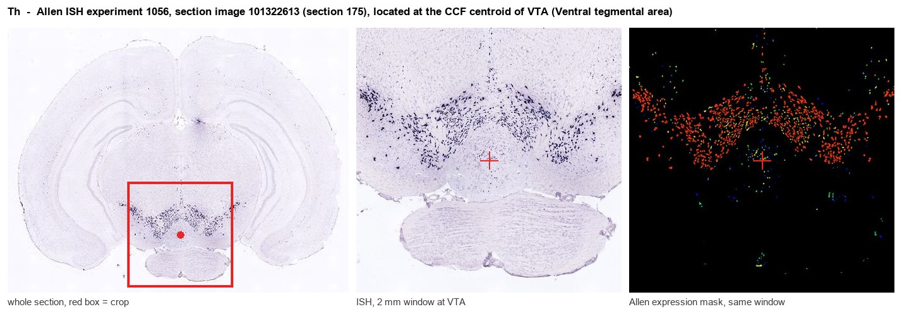
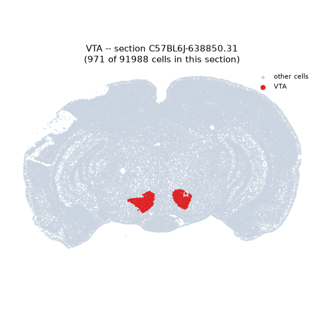
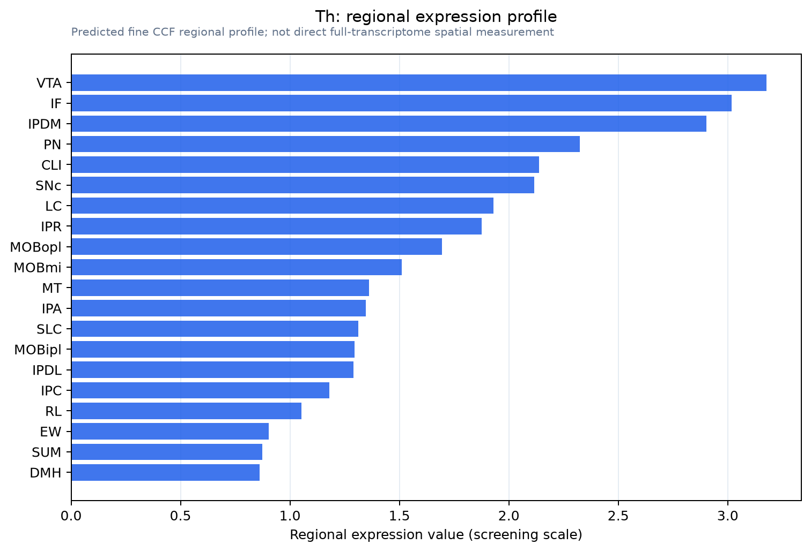

Th
Spatial tier: RESTRICTED · Class: NEUROMODULATORY_SIGNAL · Top region: VTA (Ventral tegmental area) · Positive regions: 26/554
47.3Discovery Score
43.1Targetability Score
CEvidence grade C
What this means: Th: fine CCF profile is restricted toward VTA (top regions: VTA, IF, IPDM, PN, CLI; 26 positive regions); direct spatial validation is still required.
Function in VTA: evidence, prediction, innovation
- Gene function
- Th encodes tyrosine hydroxylase, the enzyme that converts L-tyrosine to L-DOPA using tetrahydrobiopterin and molecular oxygen. This is the rate-limiting step in the synthesis of dopamine, noradrenaline and adrenaline. Its activity is tightly controlled by end-product feedback inhibition and by phosphorylation at Ser19, Ser31 and Ser40, making TH the principal control point for catecholamine supply.
- Region function
- The ventral tegmental area is the midbrain source of mesolimbic and mesocortical dopamine, projecting to nucleus accumbens, amygdala and prefrontal cortex; its dopamine neurons encode reward prediction error and drive motivation, reinforcement learning and addiction-related plasticity.
- Published in this region
- direct Direct. TH is the defining marker of VTA dopamine neurons and the basis of essentially all genetic access to them. Using TH-Cre and DAT (Slc6a3)-IRES-Cre mice, Wolff 2024 showed that sensory cues potentiate VTA dopamine-mediated reinforcement; Warlow 2024 dissected mesoaccumbal neurons that drive reward via glutamate release but aversion via dopamine co-release; Driscoll 2020 mapped nociceptin modulation of these circuits; and Marron Fernandez de Velasco 2026 established AAV-only TH/DAT-based targeting of VTA dopamine neurons for optical self-stimulation without transgenic lines.
- Predicted function
- Prediction: because TH is an enzyme rather than a circuit element, the informative manipulations are metabolic rather than ablative. Conditional Th deletion in VTA, as opposed to killing or silencing the neurons, should preserve their glutamate and GABA co-transmission while removing dopamine, dissociating the dopaminergic from the co-transmitter contribution to reinforcement. The predicted phenotype is loss of reward-prediction-error signalling and of psychostimulant reward with fast synaptic signalling intact, which the recent glutamate-versus-dopamine dissociation work makes directly testable.
- Innovation
- ★☆☆☆☆ 1/5 TH in the VTA is among the most heavily studied gene-region pairs in systems neuroscience.
- Tools
- Th-Cre (JAX 008601), Th-IRES-Cre, Slc6a3/DAT-IRES-Cre (JAX 006660), TH-Cre rats and TH-GFP mice; the TH inhibitor alpha-methyl-p-tyrosine; well-validated anti-TH antibodies; TH and DAT enhancer AAVs for cross-species dopamine-neuron targeting; dLight and GRAB-DA sensors for release imaging.
- References
Direct evidence located at the region

Allen ISH experiment 1056, section image 101322613 (section 175): the section that contains the CCF centroid of Ventral tegmental area according to the Allen image-to-atlas alignment (reference_to_image), with a 2 mm window around that point. Left: whole section, red box = window. Middle: ISH signal. Right: Allen's expression-mask view of the same window. open this image in the Allen viewer
Look it up yourself: Allen Mouse Brain ISH for ThAllen reference atlas: VTA (structure 749)ABC Atlas MERFISH viewer(in the ABC Atlas choose dataset MERFISH-C57BL6J-638850-CCF, colour cells by gene "Th" or by parcellation_substructure "VTA")All genes confined to VTA + 3-D brain
Direct spatial evidence
MERFISH REGION LOCATOR

Regional expression figure

Predicted WMB × fine-CCF profile; not direct full-transcriptome spatial measurement.
Spatial profile
Evidence and specificity
- Evidence status
- PREDICTED_FINE
- Direct sources
- None; predicted localization only
- Exclusive threshold
- 12 positive regions out of 554
- Spatial specificity
- 0.368
- Top-region fraction
- 0.061
- Filter status
- PASS
Interpretation limits
- Cell-type-to-region projection is imputed expression, not direct spatial measurement.
- Adult reference atlases do not establish stability across age, sex, strain, state, or disease.
- Transcript abundance does not guarantee protein abundance or genetic-tool performance.